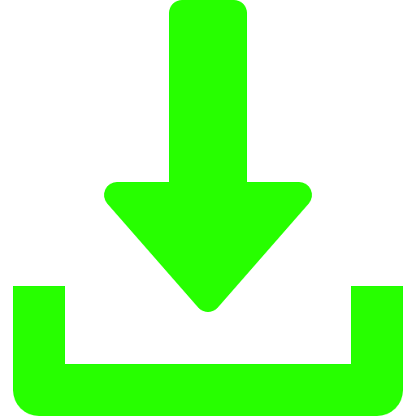

JavaScript - Projetos feito por mim
< Voltar para página inicial
1) Alterar a cor da página
2) Tabuada
3) Já existe esse CPF?
4) Login com JavaScript
5) Calcular média ENEM
6) Criador de tabelas
7) Cronômetro
8) Contagem Regressiva
9) Baixar pasta com todos projetos feito com o JavaScript
